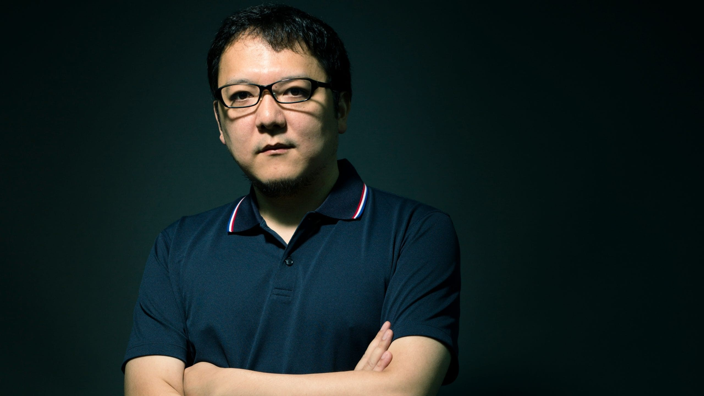
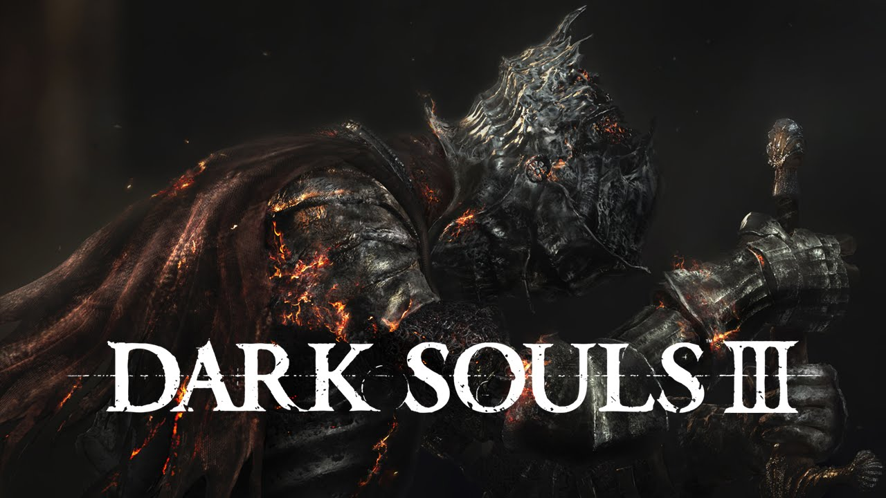
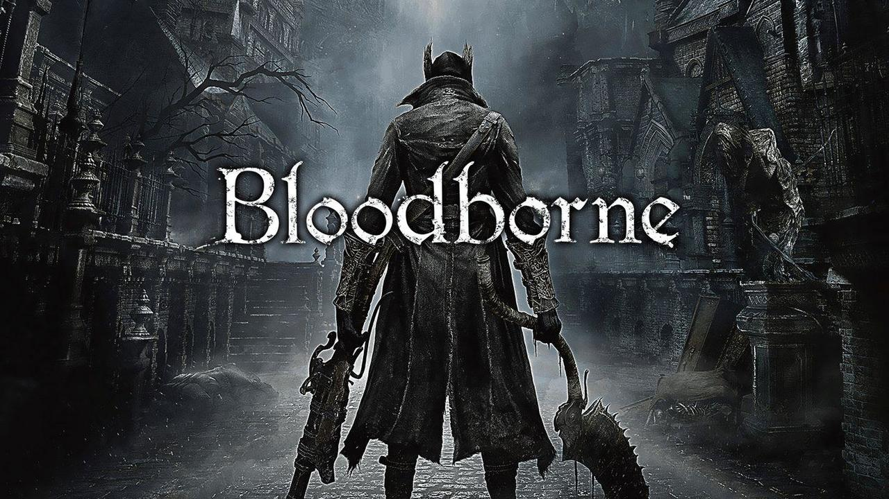
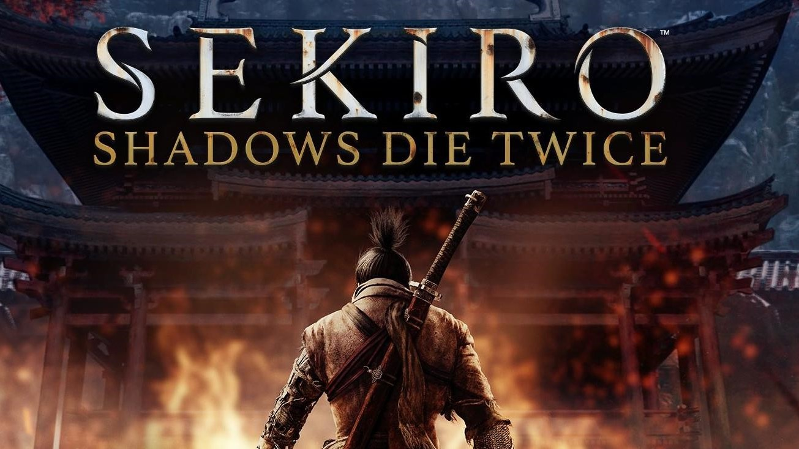

照片与作品





宫崎英高（日语：宮崎 英高／みやざき ひでたか Miyazaki Hidetaka）出生于1974年1月1日，是一位日本电子游戏制作人，现任游戏公司From Software社长。代表作为“魂系列”（恶魔之魂、黑暗之魂）、血源诅咒。
2011年由他担任总监推出了《黑暗之魂》，该作被认为是《恶魔之魂》的精神续作。
2012年索尼电脑娱乐向From Software洽谈合作事宜以制作一款全新的家用主机作品，由宫崎英高担任总监，也就是后来的《血源诅咒》。
2014年晋升为From Software社长。
2015年在结束《血源诅咒》开发后，他回归到《黑暗之魂III》的总监职务。
2016年4月，他透露From Software正在制作一项全新的作品，并且与之前的“魂系列”没有关联。2018年E3游戏展，新作正式公布，名为《只狼：影逝二度》
2018年11月18日，于英国伦敦举办的游戏业界传统大奖“金摇杆奖”颁奖典礼，宫崎英高荣获“终生成就奖”。
| 年份 | 作品名称 | 职位 |
|---|---|---|
| 2005 | 装甲核心：最终掠夺 | 企划 |
| 2006 | 装甲核心4 | 总监 |
| 2008 | 装甲核心 答案 | |
| 2009 | 恶魔之魂 | |
| 2011 | 黑暗之魂 | 总监、制作人 |
| 2014 | 黑暗之魂II | 监督 |
| 2015 | 血源诅咒 | 总监 |
| 2016 | 黑暗之魂III | |
| 2018 | Déraciné | |
| 2019 | 只狼：影逝二度 | |
| 2022 | 艾尔登法环 |
宫崎英高于日本静冈县出生与成长。童年时期由于家中并不富裕因此只能到图书馆借书，在阅读中获得不少乐趣。有时书中内容超出当时的理解能力，只好运用想像力自行理解，这对日后创作、设计游戏提供了一些经验和灵感。
大学就读庆应义塾大学社会科学相关科系，毕业后原本想加入游戏制作组，但最后进入甲骨文公司工作。后来在朋友推荐下试玩了一款游戏《ICO》，促使他再次考虑制作游戏这条路。然而以当时29岁的年龄来说很少游戏公司愿意雇用，最后他加入了From Software。
一次机缘巧合下他中途加入并主导了《恶魔之魂》的开发。起因是他听说公司有一项新游戏企划正遭遇严重瓶颈，这款后来定名为“恶魔之魂”的幻想题材动作角色扮演游戏让他相当感兴趣，并认为这是掌握这部作品开发的好机会，反正原本这企划就已经形同失败，即使后来再次失败也没什么人会在意。
宫崎英高的设计风格受到不少ACG与文学作品的影响：
关于游戏设计方式，宫崎英高强调“魂系列”中的难度设计并非刻意要比其他游戏更难，而有考虑到合理性。玩家在经历那些精心设计过的关卡后将一步步变得熟练，这会使玩家保持挑战心，从而给予玩家一种在突破常理后获得的成就感，同时游戏的难度等级也足以让玩家更深刻体会到角色培养和物资的重要性。关于剧情叙述方式，宫崎英高澄清他并没有不喜欢直接说故事的方式，只是更倾向让玩家自己来诠释与理解游戏的世界。他认为玩家自行在物品或遇见的角色中发掘出游戏世界的蛛丝马迹时会更有价值。